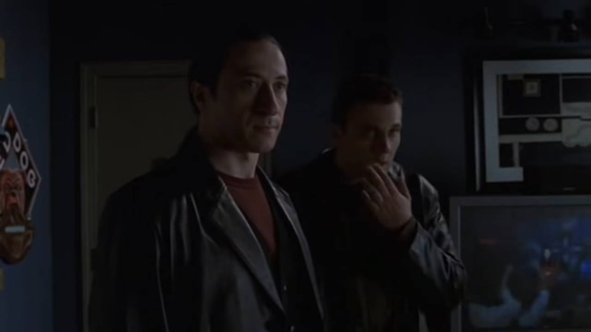

Original Airdate:
Up 'N Da Club!
| Actor | Character |
|---|---|
| Lillo Brancato Jr. | Matt Bevilaqua |
| Chris Tardio | Sean Gismonte |
| Federico Castelluccio | Furio Giunta |
Play 2nd II None's "Up 'N Da Club" ft. AMG, DJ Quik to experience the scene in its entirety.
See the music video to know what the scene was like!
2nd II None's "Up 'N Da Club" ft. AMG, DJ QuikMatt: "Yo, Up in the Club sounds funky."
Sean: "We've gottastealLEGALLY BUY something to increase the bass."

(Furio furios-ly knocks the door.)

(Sean and Matt spring into action, lowering the volume by kicking the TV and putting away theirgunmess.)
(Matt checks the peephole to see Furio.)

Sean: "Ah jeez. Its our good friend, Furio!"
Matt: "Let him in, see what he wants!"

(Furio is let in, to which he inspects the place for howdirtyneat and tidy it is.
Furio: "We here for the money. The boss money."

Matt: "Oh, the money! Let me get it for ya! Sean, get Tony's money."

(Matt quickly grabs cash out of a lamp.)

(Furio looks to the lovely music video playing on the TV.)
Furio: "E' un bel video musicale. Stunning visuals. Beautiful."
Matt: "Hey do you guys want somebeerWATER or something?"
Furio: "Just the money."

(Sean gives the money to Furio.)
Matt: "There it is. Everything Tony wants."
Furio: "Give me $1,000."

(Furio sticks his hand out, expecting the extra payment on top of the rest.)
(Matt and Sean ultimately give Furio the money.)

Furio: "Have a nice day."

(Furio leaves, leaving Matt and Sean a thousand dollars less than before.)